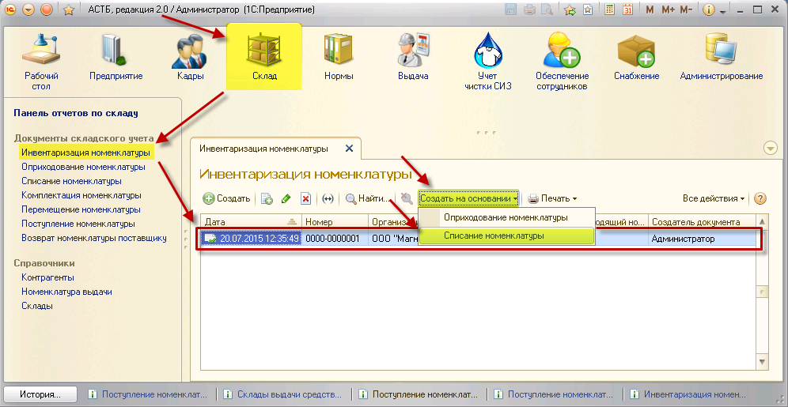
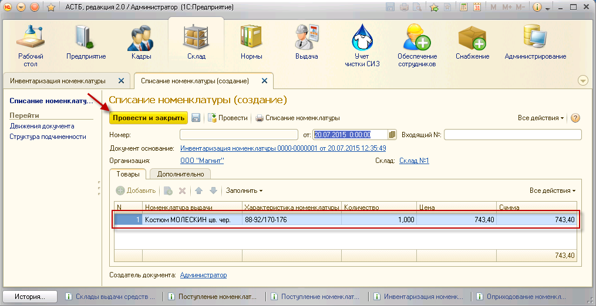
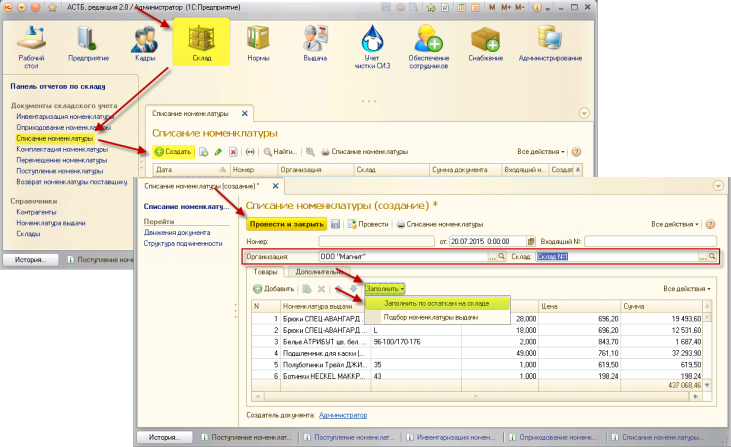
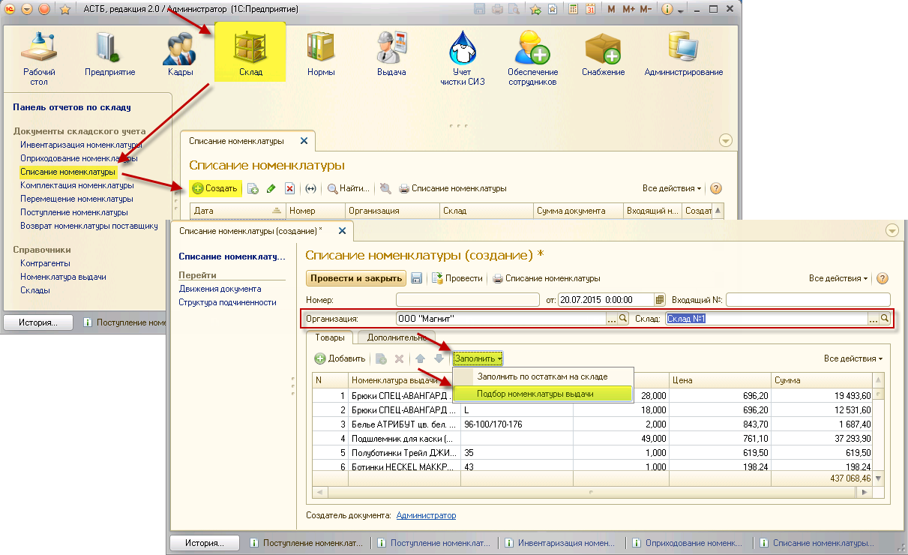

– Создать новый элемент копированием предыдущего;
– Создать новый элемент копированием предыдущего;Если в момент инвентаризации обнаружилась нехватка каких-либо товаров, необходимо провести списание данных товаров. Существует несколько способов формирования данного документа.
Документ списания может быть создан на основании документа инвентаризации. Для этого зайдите в раздел «Склад», документ «Инвентаризация номенклатуры». Из списка выберите нужный документ по дате его формирования и выделите его нажатием. Затем нажмите кнопку «Создать на основании», пункт «Списание номенклатуры».

После этого откроется окно «Списание номенклатуры (создание)» с заполненной табличной частью, в которой буду указаны недостающие товары, в соответствии с документом инвентаризации.

Если данные указаны верно, нажмите кнопку «Провести и закрыть».
Для подбора номенклатуры по складским остаткам необходимо зайти в раздел «Склад», документ «Списание номенклатуры», и нажать кнопку «Создать». Откроется окно, в котором нужно выбрать организацию и склад для списания товара. Нажмите кнопку «Заполнить», пункт «Заполнить по остаткам на складе».

После этого табличная часть будет заполнена всеми товарами, которые в данный момент содержаться на складе. С помощью кнопок командной панели отберите нужную номенклатуру:
– Создать новый элемент копированием предыдущего;
 – Удалить текущий элемент;
– Удалить текущий элемент;
 – Переместить текущий элемент вверх;
– Переместить текущий элемент вверх;
 – Переместить текущий элемент вниз.
– Переместить текущий элемент вниз.
Когда список будет сформирован, нажмите кнопку «Провести и закрыть».
Для выполнения подбора номенклатуры необходимо зайти в раздел «Склад», документ «Списание номенклатуры», и нажать кнопку «Создать». Откроется окно, в котором нужно выбрать организацию и склад для списания товара. Нажмите кнопку «Заполнить», пункт «Подбор номенклатуры выдачи».

Откроется соответствующее окно. В нем нажатием выберите папку «Номенклатура выдачи» и проставьте флажок «Только в наличии на складе» напротив нужного склада. Затем выберите недостающую по отчетности номенклатуру, ее характеристику и перетащите ее в окно данных для переноса в документ. После переноса укажите недостачу по выбранному товару (количество). Затем нажмите кнопку «Перенести в документ».
Затем в окне «Списание номенклатуры (создание)» нажмите кнопку «Провести и закрыть».